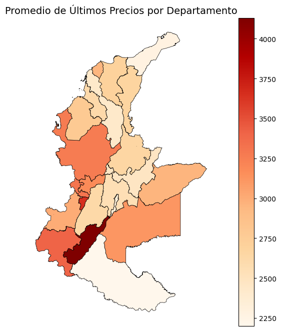
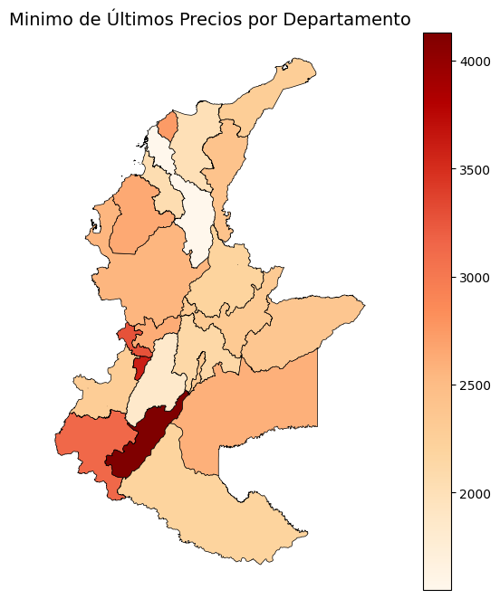

Implementacion#
Fuente de los datos: https://www.datos.gov.co/Minas-y-Energ-a/Consulta-Precios-Promedio-de-Gas-Natural-Comprimid/he3q-86dn/about_data
Importacion de librerias#
import pandas as pd
import matplotlib.pyplot as plt
import numpy as np
import geopandas as gpd
funciones usadas#
def Summary(data, sheet):
print(f"Hoja: {sheet}")
# Crear la tabla de resumen
resumen = {
"Cantidad de filas": data.shape[0],
"Cantidad de columnas": data.shape[1],
"Datos faltantes": data.isnull().sum().sum(),
"Filas duplicadas": data.duplicated().sum()
}
# Convertir el resumen en un DataFrame
ResumenHoja = pd.DataFrame(resumen, index=["Resumen"])
print("\nResumen:")
display(ResumenHoja)
print("\nEncabezado:")
display(data.head())
Cargado inicial de los datos#
df = pd.read_csv("precios.csv")
Summary(df, "Datos")
Hoja: Datos
Resumen:
| Cantidad de filas | Cantidad de columnas | Datos faltantes | Filas duplicadas | |
|---|---|---|---|---|
| Resumen | 10870 | 12 | 0 | 0 |
Encabezado:
| FECHA_PRECIO | ANIO_PRECIO | MES_PRECIO | DIA_PRECIO | DEPARTAMENTO_EDS | MUNICIPIO_EDS | NOMBRE_COMERCIAL_EDS | PRECIO_PROMEDIO_PUBLICADO | TIPO_COMBUSTIBLE | CODIGO_MUNICIPIO_DANE | LATITUD_MUNICIPIO | LONGITUD_MUNICIPIO | |
|---|---|---|---|---|---|---|---|---|---|---|---|---|
| 0 | 2024-2-01 | 2024 | 2 | 1 | VALLE DEL CAUCA | CALI | ESTACION DE SERVICIO AVENIDA SUR GAS VEHICULAR | 2,817 | GNCV | 76001 | 3.41369 | -76.521 |
| 1 | 2025-5-01 | 2025 | 5 | 1 | ANTIOQUIA | MEDELLIN | EDS ESSO CASTILLA | 3,490 | GNCV | 5001 | 6.24663 | -75.581 |
| 2 | 2022-11-01 | 2022 | 11 | 1 | VALLE DEL CAUCA | CALI | ESTACION DE SERVICIO EL CAMBIO S.A.S | 2,287 | GNCV | 76001 | 3.41369 | -76.521 |
| 3 | 2021-1-01 | 2021 | 1 | 1 | BOGOTA D.C. | BOGOTA, D.C. | EDS ESSO INDUSTRIAL BOYACA | 1,729 | GNCV | 11001 | 4.64925 | -74.107 |
| 4 | 2021-3-01 | 2021 | 3 | 1 | ATLANTICO | BARRANQUILLA | GAZEL AUTONOMA | 1,589 | GNCV | 8001 | 10.97800 | -74.815 |
notamos que contiene el codigo de municipio del DANE
df.info()
<class 'pandas.core.frame.DataFrame'>
RangeIndex: 10870 entries, 0 to 10869
Data columns (total 12 columns):
# Column Non-Null Count Dtype
--- ------ -------------- -----
0 FECHA_PRECIO 10870 non-null object
1 ANIO_PRECIO 10870 non-null int64
2 MES_PRECIO 10870 non-null int64
3 DIA_PRECIO 10870 non-null int64
4 DEPARTAMENTO_EDS 10870 non-null object
5 MUNICIPIO_EDS 10870 non-null object
6 NOMBRE_COMERCIAL_EDS 10870 non-null object
7 PRECIO_PROMEDIO_PUBLICADO 10870 non-null object
8 TIPO_COMBUSTIBLE 10870 non-null object
9 CODIGO_MUNICIPIO_DANE 10870 non-null int64
10 LATITUD_MUNICIPIO 10870 non-null float64
11 LONGITUD_MUNICIPIO 10870 non-null float64
dtypes: float64(2), int64(4), object(6)
memory usage: 1019.2+ KB
df["PRECIO_PROMEDIO_PUBLICADO"] = df["PRECIO_PROMEDIO_PUBLICADO"].str.replace(",", "").astype(int)
observamos que contiene informacion a nivel departamental/municipal como exige la asignacion
df["FECHA_PRECIO"] = pd.to_datetime(df["FECHA_PRECIO"], errors="coerce")
df.info()
<class 'pandas.core.frame.DataFrame'>
RangeIndex: 10870 entries, 0 to 10869
Data columns (total 12 columns):
# Column Non-Null Count Dtype
--- ------ -------------- -----
0 FECHA_PRECIO 10870 non-null datetime64[ns]
1 ANIO_PRECIO 10870 non-null int64
2 MES_PRECIO 10870 non-null int64
3 DIA_PRECIO 10870 non-null int64
4 DEPARTAMENTO_EDS 10870 non-null object
5 MUNICIPIO_EDS 10870 non-null object
6 NOMBRE_COMERCIAL_EDS 10870 non-null object
7 PRECIO_PROMEDIO_PUBLICADO 10870 non-null int64
8 TIPO_COMBUSTIBLE 10870 non-null object
9 CODIGO_MUNICIPIO_DANE 10870 non-null int64
10 LATITUD_MUNICIPIO 10870 non-null float64
11 LONGITUD_MUNICIPIO 10870 non-null float64
dtypes: datetime64[ns](1), float64(2), int64(5), object(4)
memory usage: 1019.2+ KB
df.head()
| FECHA_PRECIO | ANIO_PRECIO | MES_PRECIO | DIA_PRECIO | DEPARTAMENTO_EDS | MUNICIPIO_EDS | NOMBRE_COMERCIAL_EDS | PRECIO_PROMEDIO_PUBLICADO | TIPO_COMBUSTIBLE | CODIGO_MUNICIPIO_DANE | LATITUD_MUNICIPIO | LONGITUD_MUNICIPIO | |
|---|---|---|---|---|---|---|---|---|---|---|---|---|
| 0 | 2024-02-01 | 2024 | 2 | 1 | VALLE DEL CAUCA | CALI | ESTACION DE SERVICIO AVENIDA SUR GAS VEHICULAR | 2817 | GNCV | 76001 | 3.41369 | -76.521 |
| 1 | 2025-05-01 | 2025 | 5 | 1 | ANTIOQUIA | MEDELLIN | EDS ESSO CASTILLA | 3490 | GNCV | 5001 | 6.24663 | -75.581 |
| 2 | 2022-11-01 | 2022 | 11 | 1 | VALLE DEL CAUCA | CALI | ESTACION DE SERVICIO EL CAMBIO S.A.S | 2287 | GNCV | 76001 | 3.41369 | -76.521 |
| 3 | 2021-01-01 | 2021 | 1 | 1 | BOGOTA D.C. | BOGOTA, D.C. | EDS ESSO INDUSTRIAL BOYACA | 1729 | GNCV | 11001 | 4.64925 | -74.107 |
| 4 | 2021-03-01 | 2021 | 3 | 1 | ATLANTICO | BARRANQUILLA | GAZEL AUTONOMA | 1589 | GNCV | 8001 | 10.97800 | -74.815 |
Cargado de los datos para georeferenciacion#
gdf = gpd.read_file("COLOMBIA.shp", encoding='utf-8')
gdf
| OBJECTID | DPTO_CCDGO | DPTO_NANO_ | DPTO_CNMBR | DPTO_CACTO | DPTO_NAREA | DPTO_CSMBL | DPTO_NANO | PAIS_PAIS_ | SHAPE_Leng | SHAPE_Area | geometry | |
|---|---|---|---|---|---|---|---|---|---|---|---|---|
| 0 | 1 | 05 | 1886 | ANTIOQUIA | Constitucion Politica de 1886 | 6.306333e+10 | 3 | 2005 | 1 | 21.137035 | 5.155783 | POLYGON ((-76.40481 8.85708, -76.4044 8.85625,... |
| 1 | 2 | 08 | 1910 | ATLANTICO | Ley 21 de 1910 | 3.326730e+09 | 3 | 2005 | 2 | 2.461077 | 0.274825 | POLYGON ((-74.82969 11.04992, -74.82937 11.049... |
| 2 | 3 | 11 | 0 | BOGOTA D.C. | None | 1.633209e+09 | 3 | 2005 | 3 | 3.731288 | 0.133045 | POLYGON ((-74.07274 4.83565, -74.07217 4.83505... |
| 3 | 4 | 13 | 1886 | BOLIVAR | Constitucion Politica de 1886 | 2.666559e+10 | 3 | 2005 | 4 | 15.706980 | 2.191055 | MULTIPOLYGON (((-75.24966 10.79804, -75.24926 ... |
| 4 | 5 | 15 | 1886 | BOYACA | Constitucion Politica de 1886 | 2.307705e+10 | 3 | 2005 | 5 | 15.280968 | 1.883315 | POLYGON ((-72.01129 7.00944, -72.01029 7.00912... |
| 5 | 6 | 17 | 1905 | CALDAS | 11 de Abril de 1905 | 7.415933e+09 | 3 | 2005 | 6 | 6.614200 | 0.604712 | POLYGON ((-74.67118 5.77127, -74.67112 5.77115... |
| 6 | 7 | 18 | 1981 | CAQUETA | Ley 78 del 29 de Diciembre de 1981 | 9.007665e+10 | 3 | 2005 | 7 | 19.850907 | 7.316017 | POLYGON ((-74.91094 2.96445, -74.90768 2.96367... |
| 7 | 8 | 19 | 1857 | CAUCA | 15 de junio de 1857 | 3.064331e+10 | 3 | 2005 | 8 | 13.352092 | 2.485633 | POLYGON ((-76.45841 3.32857, -76.45819 3.32857... |
| 8 | 9 | 20 | 1967 | CESAR | Ley 25 21 de junio de 1967 | 2.228367e+10 | 3 | 2005 | 9 | 12.597031 | 1.834978 | POLYGON ((-73.45957 10.86878, -73.45905 10.868... |
| 9 | 10 | 23 | 1951 | CORDOBA | Ley 9 del 18 de Diciembre de 1951 | 2.504194e+10 | 3 | 2005 | 10 | 8.982757 | 2.053760 | POLYGON ((-75.92261 9.43892, -75.92209 9.43846... |
| 10 | 11 | 25 | 1886 | CUNDINAMARCA | Constitucion Politica de 1886 | 2.236838e+10 | 3 | 2005 | 11 | 12.960193 | 1.823363 | POLYGON ((-73.05116 4.735, -73.05862 4.68673, ... |
| 11 | 12 | 27 | 1947 | CHOCO | Ley 13 del 3 de Noviembre de 1947 | 4.757908e+10 | 3 | 2005 | 12 | 19.085028 | 3.876418 | POLYGON ((-77.347 8.64468, -77.34604 8.64467, ... |
| 12 | 13 | 41 | 1905 | HUILA | Ley 46 de 1905 | 1.871102e+10 | 3 | 2005 | 13 | 9.803136 | 1.520385 | POLYGON ((-74.52051 3.82768, -74.51933 3.82763... |
| 13 | 14 | 44 | 1964 | LA GUAJIRA | Acto Legislativo No. 1 de Diciembre 28 de 1964 | 2.067067e+10 | 3 | 2005 | 14 | 10.168370 | 1.711062 | POLYGON ((-71.66688 12.4582, -71.66673 12.4581... |
| 14 | 15 | 47 | 0 | MAGDALENA | None | 2.320573e+10 | 3 | 2005 | 15 | 10.747550 | 1.914917 | POLYGON ((-74.04415 11.34911, -74.04397 11.349... |
| 15 | 16 | 50 | 1959 | META | Ley 118 del 16 de Diciembre de 1959 | 8.548555e+10 | 3 | 2005 | 16 | 17.455890 | 6.951611 | POLYGON ((-71.0775 4.92462, -71.07753 4.87697,... |
| 16 | 17 | 52 | 1904 | NARI?O | Ley 1 de 1904 | 3.164991e+10 | 3 | 2005 | 17 | 10.819582 | 2.560667 | POLYGON ((-78.00558 2.68956, -78.00547 2.68956... |
| 17 | 18 | 54 | 1910 | NORTE DE SANTANDER | Ley 25 de 1910 | 2.202302e+10 | 3 | 2005 | 18 | 11.128765 | 1.805850 | POLYGON ((-73.00472 9.28011, -73.0052 9.27873,... |
| 18 | 19 | 63 | 1966 | QUINDIO | Ley 2 TM de 1966 | 1.935384e+09 | 3 | 2005 | 19 | 2.507765 | 0.157564 | POLYGON ((-75.7024 4.72112, -75.70211 4.72063,... |
| 19 | 20 | 66 | 1966 | RISARALDA | Ley 70 del 1 de Diciembre de 1966 | 3.978381e+09 | 3 | 2005 | 20 | 5.135623 | 0.324123 | POLYGON ((-75.99569 5.52893, -75.99512 5.52748... |
| 20 | 21 | 68 | 1910 | SANTANDER | Ley 25 14 de Julio de 1910 | 3.059683e+10 | 3 | 2005 | 21 | 11.452211 | 2.501891 | POLYGON ((-73.77891 8.13972, -73.77701 8.14216... |
| 21 | 22 | 70 | 1966 | SUCRE | Ley 47 del 8 de Agosto de 1966 | 1.070915e+10 | 3 | 2005 | 22 | 8.133088 | 0.880406 | POLYGON ((-75.53687 10.06265, -75.54466 10.045... |
| 22 | 23 | 73 | 1909 | TOLIMA | Ley 65 de Noviembre de 1909 | 2.398336e+10 | 3 | 2005 | 23 | 9.315385 | 1.952249 | POLYGON ((-74.7336 5.28577, -74.73033 5.27905,... |
| 23 | 24 | 76 | 1910 | VALLE DEL CAUCA | Decreto No 340 de 16 de Abril de 1910 | 2.126936e+10 | 3 | 2005 | 24 | 10.439368 | 1.728411 | POLYGON ((-76.06306 5.01515, -76.0624 5.0151, ... |
| 24 | 25 | 81 | 1991 | ARAUCA | 5 de Julio Constitucion Politica de 1991 | 2.380556e+10 | 3 | 2005 | 25 | 9.162939 | 1.940327 | POLYGON ((-70.67671 7.09263, -70.67666 7.09251... |
| 25 | 26 | 85 | 1991 | CASANARE | 5 de Julio Constitucion Politica de 1991 | 4.448400e+10 | 3 | 2005 | 26 | 11.830742 | 3.622186 | POLYGON ((-72.36091 6.28102, -72.36093 6.28101... |
| 26 | 27 | 86 | 1991 | PUTUMAYO | Articulo 309 Constitucion Politica de 1991 | 2.589376e+10 | 3 | 2005 | 27 | 12.672464 | 2.101163 | POLYGON ((-76.89592 1.51027, -76.89606 1.50996... |
| 27 | 28 | 91 | 1991 | AMAZONAS | Decreto 2274 del 4 de Octubre de la Constituci... | 1.100465e+11 | 3 | 2005 | 28 | 24.747842 | 8.921607 | POLYGON ((-71.29212 0.06821, -71.28829 0.06762... |
| 28 | 29 | 94 | 1991 | GUAINIA | Articulo 309 Constitucion Politica de 1991 | 7.156745e+10 | 3 | 2005 | 29 | 19.493315 | 5.769826 | POLYGON ((-67.68356 3.90772, -67.6795 3.90308,... |
| 29 | 30 | 95 | 1991 | GUAVIARE | 5 de Julio Constitucion Politica de 1991 | 5.545392e+10 | 3 | 2005 | 30 | 18.739054 | 4.501348 | POLYGON ((-71.28567 2.87055, -71.285 2.87051, ... |
| 30 | 31 | 97 | 1991 | VAUPES | Articulo 309 Constitucion Politica de 1991 | 5.354358e+10 | 3 | 2005 | 31 | 19.242591 | 4.333330 | POLYGON ((-70.10256 2.07311, -70.10401 2.07224... |
| 31 | 32 | 99 | 1991 | VICHADA | 5 de Julio Constitucion Politica de 1991 | 1.000144e+11 | 3 | 2005 | 32 | 17.181693 | 8.096236 | POLYGON ((-67.7098 4.03949, -67.71273 4.03756,... |
| 32 | 33 | 88 | 1991 | ARCHIPIELAGO DE SAN ANDRES | Artículo 310 Constitucion Politica de 1991 | 4.960214e+04 | 3 | 2005 | 12 | 0.650698 | 0.004064 | MULTIPOLYGON (((-81.70353 12.59404, -81.70342 ... |
verificamos que cumple con todos los requisitos de la asignacion, contener las columnas
# Aseguramos que el código del departamento sea string con ceros a la izquierda
df["CODIGO_DEPTO"] = df["CODIGO_MUNICIPIO_DANE"].astype(str).str.zfill(5).str[:2]
gdf["DPTO_CCDGO"] = gdf["DPTO_CCDGO"].astype(str).str.zfill(2)
# Unimos por código de departamento
df_gdf = df.merge(gdf, left_on="CODIGO_DEPTO", right_on="DPTO_CCDGO", how="left")
# Convertimos a GeoDataFrame
geo_df = gpd.GeoDataFrame(df_gdf, geometry="geometry", crs=gdf.crs)
print(geo_df.columns)
Index(['FECHA_PRECIO', 'ANIO_PRECIO', 'MES_PRECIO', 'DIA_PRECIO',
'DEPARTAMENTO_EDS', 'MUNICIPIO_EDS', 'NOMBRE_COMERCIAL_EDS',
'PRECIO_PROMEDIO_PUBLICADO', 'TIPO_COMBUSTIBLE',
'CODIGO_MUNICIPIO_DANE', 'LATITUD_MUNICIPIO', 'LONGITUD_MUNICIPIO',
'CODIGO_DEPTO', 'OBJECTID', 'DPTO_CCDGO', 'DPTO_NANO_', 'DPTO_CNMBR',
'DPTO_CACTO', 'DPTO_NAREA', 'DPTO_CSMBL', 'DPTO_NANO', 'PAIS_PAIS_',
'SHAPE_Leng', 'SHAPE_Area', 'geometry'],
dtype='object')
print(geo_df.dtypes)
FECHA_PRECIO datetime64[ns]
ANIO_PRECIO int64
MES_PRECIO int64
DIA_PRECIO int64
DEPARTAMENTO_EDS object
MUNICIPIO_EDS object
NOMBRE_COMERCIAL_EDS object
PRECIO_PROMEDIO_PUBLICADO int64
TIPO_COMBUSTIBLE object
CODIGO_MUNICIPIO_DANE int64
LATITUD_MUNICIPIO float64
LONGITUD_MUNICIPIO float64
CODIGO_DEPTO object
OBJECTID int32
DPTO_CCDGO object
DPTO_NANO_ int32
DPTO_CNMBR object
DPTO_CACTO object
DPTO_NAREA float64
DPTO_CSMBL object
DPTO_NANO int32
PAIS_PAIS_ object
SHAPE_Leng float64
SHAPE_Area float64
geometry geometry
dtype: object
geo_df.head()
| FECHA_PRECIO | ANIO_PRECIO | MES_PRECIO | DIA_PRECIO | DEPARTAMENTO_EDS | MUNICIPIO_EDS | NOMBRE_COMERCIAL_EDS | PRECIO_PROMEDIO_PUBLICADO | TIPO_COMBUSTIBLE | CODIGO_MUNICIPIO_DANE | ... | DPTO_NANO_ | DPTO_CNMBR | DPTO_CACTO | DPTO_NAREA | DPTO_CSMBL | DPTO_NANO | PAIS_PAIS_ | SHAPE_Leng | SHAPE_Area | geometry | |
|---|---|---|---|---|---|---|---|---|---|---|---|---|---|---|---|---|---|---|---|---|---|
| 0 | 2024-02-01 | 2024 | 2 | 1 | VALLE DEL CAUCA | CALI | ESTACION DE SERVICIO AVENIDA SUR GAS VEHICULAR | 2817 | GNCV | 76001 | ... | 1910 | VALLE DEL CAUCA | Decreto No 340 de 16 de Abril de 1910 | 2.126936e+10 | 3 | 2005 | 24 | 10.439368 | 1.728411 | POLYGON ((-76.06306 5.01515, -76.0624 5.0151, ... |
| 1 | 2025-05-01 | 2025 | 5 | 1 | ANTIOQUIA | MEDELLIN | EDS ESSO CASTILLA | 3490 | GNCV | 5001 | ... | 1886 | ANTIOQUIA | Constitucion Politica de 1886 | 6.306333e+10 | 3 | 2005 | 1 | 21.137035 | 5.155783 | POLYGON ((-76.40481 8.85708, -76.4044 8.85625,... |
| 2 | 2022-11-01 | 2022 | 11 | 1 | VALLE DEL CAUCA | CALI | ESTACION DE SERVICIO EL CAMBIO S.A.S | 2287 | GNCV | 76001 | ... | 1910 | VALLE DEL CAUCA | Decreto No 340 de 16 de Abril de 1910 | 2.126936e+10 | 3 | 2005 | 24 | 10.439368 | 1.728411 | POLYGON ((-76.06306 5.01515, -76.0624 5.0151, ... |
| 3 | 2021-01-01 | 2021 | 1 | 1 | BOGOTA D.C. | BOGOTA, D.C. | EDS ESSO INDUSTRIAL BOYACA | 1729 | GNCV | 11001 | ... | 0 | BOGOTA D.C. | None | 1.633209e+09 | 3 | 2005 | 3 | 3.731288 | 0.133045 | POLYGON ((-74.07274 4.83565, -74.07217 4.83505... |
| 4 | 2021-03-01 | 2021 | 3 | 1 | ATLANTICO | BARRANQUILLA | GAZEL AUTONOMA | 1589 | GNCV | 8001 | ... | 1910 | ATLANTICO | Ley 21 de 1910 | 3.326730e+09 | 3 | 2005 | 2 | 2.461077 | 0.274825 | POLYGON ((-74.82969 11.04992, -74.82937 11.049... |
5 rows × 25 columns
geo_df_sorted = geo_df.sort_values("FECHA_PRECIO")
last_muni = geo_df_sorted.groupby("CODIGO_MUNICIPIO_DANE").tail(1)
Primera georeferenciacion#
Promedio de Últimos Precios por Departamento
# Promedio de municipios dentro de cada departamento
dept_avg = last_muni.groupby("DPTO_CCDGO").agg({
"PRECIO_PROMEDIO_PUBLICADO": "mean"
}).reset_index()
# Asegurar que los códigos sean comparables (dos dígitos con ceros)
dept_avg["DPTO_CCDGO"] = dept_avg["DPTO_CCDGO"].astype(str).str.zfill(2)
geo_df["DPTO_CCDGO"] = geo_df["DPTO_CCDGO"].astype(str).str.zfill(2)
# Crear base de departamentos con geometría
dept_base = geo_df.drop_duplicates("DPTO_CCDGO")[["DPTO_CCDGO", "DPTO_CNMBR", "geometry"]]
# Merge asegurando que todos los departamentos estén presentes
gdf_dept = dept_base.merge(dept_avg, on="DPTO_CCDGO", how="left")
tabla_resultados = gdf_dept[["DPTO_CCDGO", "DPTO_CNMBR", "PRECIO_PROMEDIO_PUBLICADO"]].sort_values("DPTO_CCDGO")
pd.set_option("display.max_rows", None) # para ver todos los departamentos
display(tabla_resultados)
| DPTO_CCDGO | DPTO_CNMBR | PRECIO_PROMEDIO_PUBLICADO | |
|---|---|---|---|
| 1 | 05 | ANTIOQUIA | 3266.600000 |
| 3 | 08 | ATLANTICO | 2952.250000 |
| 2 | 11 | BOGOTA D.C. | 2340.000000 |
| 4 | 13 | BOLIVAR | 2426.666667 |
| 11 | 15 | BOYACA | 2475.200000 |
| 13 | 17 | CALDAS | 3172.666667 |
| 21 | 18 | CAQUETA | 2200.000000 |
| 8 | 19 | CAUCA | 3411.500000 |
| 15 | 20 | CESAR | 2673.750000 |
| 19 | 23 | CORDOBA | 2786.666667 |
| 6 | 25 | CUNDINAMARCA | 2552.307692 |
| 10 | 41 | HUILA | 4130.000000 |
| 20 | 44 | LA GUAJIRA | 2280.000000 |
| 5 | 47 | MAGDALENA | 2702.333333 |
| 17 | 50 | META | 3119.000000 |
| 7 | 63 | QUINDIO | 3649.000000 |
| 14 | 66 | RISARALDA | 3314.000000 |
| 12 | 68 | SANTANDER | 2655.375000 |
| 9 | 70 | SUCRE | 2621.666667 |
| 18 | 73 | TOLIMA | 2628.750000 |
| 0 | 76 | VALLE DEL CAUCA | 3004.333333 |
| 16 | 85 | CASANARE | 2956.000000 |
fig, ax = plt.subplots(1, 1, figsize=(12, 8))
gdf_dept.plot(
column="PRECIO_PROMEDIO_PUBLICADO",
cmap="OrRd",
legend=True,
edgecolor="black",
linewidth=0.5,
ax=ax
)
ax.set_title("Promedio de Últimos Precios por Departamento", fontsize=14)
ax.axis("off")
plt.show()

Conclusion#
A partir del análisis del precio promedio publicado del combustible por departamento, tomando como referencia el último precio registrado en cada municipio y luego promediando a nivel departamental, se observan varias tendencias:
Departamentos con precios más altos
Huila presenta el valor más elevado (\(4.130), seguido por Quindío (\)3.649) y Cauca ($3.411).
Esto indica que en el suroccidente y centro del país los precios tienden a estar por encima del promedio nacional.
Departamentos con precios más bajos
Caquetá registra el precio más bajo (\(2.200), junto con La Guajira (\)2.280) y Bogotá D.C. ($2.340).
Estos valores reflejan que algunas regiones periféricas y la capital mantienen precios relativamente más accesibles.
Departamentos en rangos intermedios
Antioquia, Valle del Cauca, Risaralda y Caldas se ubican entre los \(3.000 y \)3.300, lo que representa un rango medio-alto.
En contraste, Cundinamarca, Sucre, Tolima y Santander oscilan entre \(2.550 y \)2.650, en un rango medio-bajo.
Cobertura de datos
Solo aparecen 21 departamentos, lo que indica que existen territorios sin información disponible o sin registros recientes de precios. Esto es importante, pues limita la comparación completa a nivel nacional.
Segunda georeferenciacion#
Minimo de Últimos Precios por Departamento
# Promedio de municipios dentro de cada departamento
dept_avg = last_muni.groupby("DPTO_CCDGO").agg({
"PRECIO_PROMEDIO_PUBLICADO": "min"
}).reset_index()
# Asegurar que los códigos sean comparables (dos dígitos con ceros)
dept_avg["DPTO_CCDGO"] = dept_avg["DPTO_CCDGO"].astype(str).str.zfill(2)
geo_df["DPTO_CCDGO"] = geo_df["DPTO_CCDGO"].astype(str).str.zfill(2)
# Crear base de departamentos con geometría
dept_base = geo_df.drop_duplicates("DPTO_CCDGO")[["DPTO_CCDGO", "DPTO_CNMBR", "geometry"]]
# Merge asegurando que todos los departamentos estén presentes
gdf_dept = dept_base.merge(dept_avg, on="DPTO_CCDGO", how="left")
tabla_resultados = gdf_dept[["DPTO_CCDGO", "DPTO_CNMBR", "PRECIO_PROMEDIO_PUBLICADO"]].sort_values("DPTO_CCDGO")
pd.set_option("display.max_rows", None) # para ver todos los departamentos
display(tabla_resultados)
| DPTO_CCDGO | DPTO_CNMBR | PRECIO_PROMEDIO_PUBLICADO | |
|---|---|---|---|
| 1 | 05 | ANTIOQUIA | 2550 |
| 3 | 08 | ATLANTICO | 2742 |
| 2 | 11 | BOGOTA D.C. | 2340 |
| 4 | 13 | BOLIVAR | 1549 |
| 11 | 15 | BOYACA | 2329 |
| 13 | 17 | CALDAS | 2620 |
| 21 | 18 | CAQUETA | 2200 |
| 8 | 19 | CAUCA | 3141 |
| 15 | 20 | CESAR | 2419 |
| 19 | 23 | CORDOBA | 2640 |
| 6 | 25 | CUNDINAMARCA | 2129 |
| 10 | 41 | HUILA | 4130 |
| 20 | 44 | LA GUAJIRA | 2280 |
| 5 | 47 | MAGDALENA | 2010 |
| 17 | 50 | META | 2589 |
| 7 | 63 | QUINDIO | 3599 |
| 14 | 66 | RISARALDA | 3279 |
| 12 | 68 | SANTANDER | 2199 |
| 9 | 70 | SUCRE | 2049 |
| 18 | 73 | TOLIMA | 1850 |
| 0 | 76 | VALLE DEL CAUCA | 2290 |
| 16 | 85 | CASANARE | 2369 |
fig, ax = plt.subplots(1, 1, figsize=(12, 8))
gdf_dept.plot(
column="PRECIO_PROMEDIO_PUBLICADO",
cmap="OrRd",
legend=True,
edgecolor="black",
linewidth=0.5,
ax=ax
)
ax.set_title("Minimo de Últimos Precios por Departamento", fontsize=14)
ax.axis("off")
plt.show()

Al comparar los resultados del cálculo con el último precio promedio publicado frente a la alternativa de considerar el precio mínimo registrado en cada departamento, se evidencia la importancia de definir con claridad el criterio de análisis.
El uso del último promedio ofrece una visión más cercana a la realidad actual del mercado, permitiendo identificar desigualdades presentes entre regiones, mientras que el mínimo histórico refleja los momentos de mayor accesibilidad, pero puede estar condicionado por factores coyunturales o excepcionales.
Esta comparación muestra que, dependiendo del enfoque, los resultados pueden variar de manera significativa: un análisis basado en promedios recientes tiende a resaltar la estabilidad y las tendencias actuales, mientras que un análisis de mínimos pone en evidencia la variabilidad y disparidad histórica de los precios.
En consecuencia, ambos enfoques son complementarios y su elección depende del propósito del estudio: si se busca diagnosticar la situación actual, es preferible trabajar con promedios; pero si se pretende evaluar la evolución y los escenarios de mayor acceso, conviene considerar los mínimos registrados.
Conclusion final#
La georreferenciación es una herramienta fundamental en los estudios sociales porque permite conectar la información cuantitativa y cualitativa con el espacio geográfico donde ocurre. No se trata solo de ubicar un dato en un mapa, sino de darle contexto territorial, histórico y cultural.
Al trabajar con variables sociales, como precios, acceso a servicios, condiciones de vida o dinámicas poblacionales, la georreferenciación ayuda a:
Visibilizar desigualdades: lo que en una tabla puede ser solo un número, en el mapa se convierte en una diferencia tangible entre territorios. Esto facilita identificar regiones con rezagos, brechas socioeconómicas o falta de cobertura en políticas públicas.
Reconocer patrones espaciales: fenómenos sociales y económicos rara vez ocurren de manera aislada; suelen estar condicionados por la ubicación, la infraestructura, la cercanía a centros urbanos o la geografía física. La georreferenciación permite evidenciar relaciones de concentración o dispersión.
Facilitar la toma de decisiones: gobiernos, instituciones y comunidades pueden orientar sus recursos de manera más justa y eficiente al saber exactamente dónde están los problemas y las oportunidades.
Integrar múltiples capas de información: combinar datos sociales con información ambiental, de movilidad, educación, salud o seguridad para construir un panorama más completo y realista de los territorios.
En conclusión, la georreferenciación transforma los estudios sociales en análisis más profundos y útiles, porque ancla los datos a la realidad territorial. Esto no solo mejora la precisión de la investigación, sino que también fortalece la justicia social y la equidad en las decisiones, al mostrar que los problemas no son abstractos, sino que tienen lugar en espacios concretos donde viven las personas.